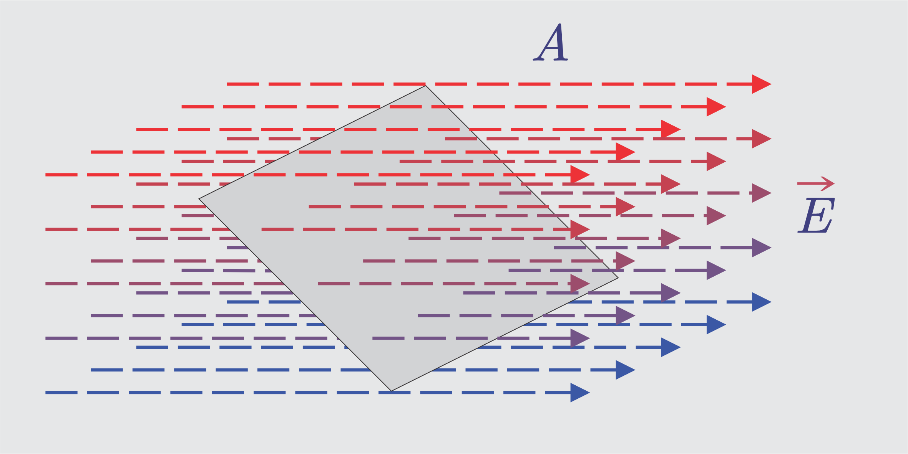

# Listrik Statis - Muatan Listrik - Gaya Elektrostatis (Gaya Coulomb) dan Medan Listrik - Hukum Gauss dan Permukaan Gauss - Energi Potensial dan Potensial Listrik --- ## Listrik Statis - Listrik statis mempelajari tentang muatan listrik dalam keadaan diam. --- <div class="r-vstack justify-center"> <div class="r-hstack justify-center"> <div class="tooltip" data-id="box1" style="background: #111; width: 300px; height: 300px; margin: 10px; border-radius: 5px;"><span class="tooltiptext-b-3">Model atom Hidrogen dengan satu proton dan satu elektron</span></div> <div class="tooltip" data-id="box2" style="background: #111; width: 300px; height: 300px; margin: 10px; border-radius: 5px;"><span class="tooltiptext-b-3">Model atom Karbon dengan 6 proton, 6 neutron dan 6 elektron</span></div> <div class="tooltip" data-id="box3" style="background: #111; width: 300px; height: 300px; margin: 10px; border-radius: 5px;"><span class="tooltiptext-b-3">Model atom Oksigen dengan 6 proton, 6 neutron dan 6 elektron</span></div> </div> <div class="r-hstack justify-center"> <div class="tooltip" data-id="box1" style="background: #111; width: 300px; height: 300px; margin: 10px; border-radius: 5px;"><img src="../resources/images/Cu.webp"><span class="tooltiptext-t-3">Model atom Tembaga dengan 29 proton, 29 neutron dan 29 elektron</span></div> <div class="tooltip" data-id="box2" style="background: #111; width: 300px; height: 300px; margin: 10px; border-radius: 5px;"><img src="../resources/images/Cd.webp"><span class="tooltiptext-t-3">Model atom Kadmium dengan 48 proton, 48 neutron dan 48 elektron</span></div> <div class="tooltip" data-id="box3" style="background: #111; width: 300px; height: 300px; margin: 10px; border-radius: 5px;"><img src="../resources/images/Au.webp"><span class="tooltiptext-t-3">Model atom Emas dengan 79 proton, 79 neutron dan 79 elektron</span></div> </div></div> --- <div class="r-hstack justify-center"> <div class="tooltip" data-id="box1" style="background: #111; width: 300px; height: 300px; margin: 10px; border-radius: 5px;"><span class="tooltiptext-b-3">Model atom Na dengan 11 neutron, 11 proton dan 11 elektron</span></div> <div class="tooltip" data-id="box2" style="background: #111; width: 300px; height: 300px; margin: 10px; border-radius: 5px;"><span class="tooltiptext-b-3">Model atom Cl dengan 6 proton, 6 neutron dan 6 elektron</span></div> </div> --- ### Muatan Listrik - Muatan listrik terdiri dari dua jenis, muatan positif (**Proton**) dan muatan negatif (**Elektron**). - Benda dikatakan bermuatan positif jika jumlah proton > jumlah elektron. - Benda dikatakan bermuatan negatif jika jumlah elektron > jumlah proton. - Benda dikatakan tidak bermuatan jika jumlah elektron = jumlah proton. --- ### Interaksi antara muatan-muatan “Dua muatan yang sejenis (kedua-duanya positif atau kedua-duanya negatif) saling tolak-menolak; sedangkan dua muatan yang tidak sejenis (yang satu positif dan yang lain negatif) akan saling tarik-menarik ”. --- <iframe width="1120" height="730" src="https://www.youtube.com/embed/B5LVoU_a08c?si=WImBdjMHYcZBnHdm" title="YouTube video player" frameborder="0" allow="accelerometer; autoplay; clipboard-write; encrypted-media; gyroscope; picture-in-picture; web-share" referrerpolicy="strict-origin-when-cross-origin" allowfullscreen></iframe> --- ### Gaya Elektrostatis (Gaya Coulomb) Hukum Coulomb menyatakan bahwa *”besar gaya tarik menarik atau tolak menolak antara dua muatan listrik sebanding dengan muatan-muatannya dan berbanding terbalik dengan kuadrat jarak antara kedua muatan”* --- ###### $$F_C=k\frac {Q_1Q_2}{r^2}$$ - *F<sub>C</sub>* = gaya elektrostatis (N) - *k* = konstanta dielektrik (N m<sup>2</sup>/C<sup>2</sup>) - *Q* = muatan (C) - *r* = jarak (m) --- Konstanta dielektrik (*k*) besarnya tergantung pada tempat di mana muatan tersebut berada. Bila pengamatan dilakukan di ruang hampa udara, nilai *k*= 8,988×10<sup>9</sup> N m<sup>2</sup>/C<sup>2</sup> atau sering dibulatkan menjadi **9×10<sup>9</sup> N m<sup>2</sup>/C<sup>2</sup>**. Nilai tersebut sama dengan $$k=\frac{1}{4\pi\varepsilon_0}$$ ,dengan ε<sub>0</sub>=8,854 ×10<sup>-12</sup> C<sup>2</sup>/Nm<sup>2</sup> --- Karena itu hukum Coulomb juga dapat ditulis ###### $$F_C=\frac{1}{4\pi\varepsilon_0}\frac {Q_1Q_2}{r^2}$$ Catatan: Untuk medium selain udara, maka harga *k* juga lain, tergantung dari permitivitasnya. --- $$\varepsilon_r=\frac{\varepsilon}{\varepsilon_0}\implies\varepsilon=\varepsilon_r\varepsilon_0$$ ###### $$\begin{split} FC_{bahan}&=\frac{1}{4\pi\varepsilon}\frac {Q_1Q_2}{r^2}=\frac{1}{4\pi\varepsilon_r\varepsilon_0}\frac {Q_1Q_2}{r^2}\cr &=\frac{1}{\varepsilon_r}FC_{vakum}\end{split}$$ - *ε<sub>0</sub>* = permitivitas vakum - *ε<sub>r</sub>* = permitivitas relatif - *ε* = permitivitas bahan --- Interaksi antara muatan <div class="r-stack"> </div> --- ## Muatan-muatan Segaris - Untuk muatan-muatan yang terletak segaris, kita dapat menggunakan arah kanan sebagai arah positif dan arah ke kiri sebagai arah negatif. - Jika ada dua muatan yang saling berinteraksi, kita dapat menempatkan muatan ketiga dalam satu garis yang sama, sedemikian sehingga gaya Coulomb yang dialami muatan itu sama dengan nol. --- ### Dua Muatan Sejenis - Pada dua muatan sejenis, jika kita hendak meletakkan muatan ketiga sehingga gaya Coulomb yang dialami muatan itu sama dengan nol, muatan tersebut harus diletakkan di tengah. - Ini dikarenakan muatan tersebut akan sama-sama ditolak oleh kedua muatan jika bermuatan sama, atau sama-sama ditarik oleh kedua muatan jika muatannya berbeda. - Dengan demikian resultan gayanya ada kemungkinan sama dengan nol. --- <div class="r-stack"> <div class="fragment fade-in-then-out"><p>Misalnya kedua muatan sama-sama positif.</p></div> <div class="fragment fade-in-then-out"><p>Muatan ketiga yang juga positif, jika diletakkan di kiri muatan A, akan ditolak oleh A dan B, sehingga resultan gayanya tidak mungkin sama dengan nol. Demikian pula ketika diletakkan di kanan muatan B.</p></div> <div class="fragment fade-in-then-out"><p>Seandainya muatan ketiga negatif, diletakkan di kanan muatan B, akan ditolak oleh A dan B, sehingga resultan gayanya juga tidak mungkin sama dengan nol. Demikian pula ketika diletakkan di kiri muatan A.</p></div> <div class="fragment fade-in-then-out"><img src="../resources/images/ls10.png" height="250"><p>Tetapi ketika diletakkan di antara muatan A dan B, resultan gayanya mungkin nol, karena jika positif ia akan ditolak oleh A maupun B.</p></div> <div class="fragment fade-in-then-out"><p>Demikian juga ketika negatif, akan sama-sama ditarik oleh A maupun B.</p></div> </div> --- - Jarak muatan C ke A (*r<sub>CA</sub>*) dan C ke B (*r<sub>CB</sub>*) dapat dihitung: $$F_{CA}=F_{CB}$$ $$k\frac {Q_AQ_C}{r_{CA}^2}=k\frac {Q_BQ_C}{r_{CB}^2}$$ $$\frac {Q_A}{r_{CA}^2}=\frac {Q_B}{r_{CB}^2}$$ --- $$\frac {\sqrt{Q_A}}{r_{CA}}=\frac {\sqrt{Q_B}}{r_{CB}}$$ $$r_{CB}\sqrt{Q_A}=r_{CA}\sqrt{Q_B}$$ - karena *$r_{CA}+r_{CB}=r_{AB}$*, maka $$r_{CB}\sqrt{Q_A}=(r_{AB}-r_{CB})\sqrt{Q_B}$$ $$r_{CB}\sqrt{Q_A}=r_{AB}\sqrt{Q_B}-r_{CB}\sqrt{Q_B}$$ --- $$r_{CB}\sqrt{Q_A}+r_{CB}\sqrt{Q_B}=r_{AB}\sqrt{Q_B}$$ ###### $$r_{CB}=\frac{r_{AB}\sqrt{Q_B}}{\sqrt{Q_A}+\sqrt{Q_B}}$$ ###### $$r_{CA}=\frac{r_{AB}\sqrt{Q_A}}{\sqrt{Q_A}+\sqrt{Q_B}}$$ --- ### Dua Muatan Tak Sejenis - Pada dua muatan tak sejenis, jika kita hendak meletakkan muatan ketiga sehingga gaya Coulomb yang dialami muatan itu sama dengan nol, muatan tersebut harus diletakkan di luar (kiri atau kanan). - Ini dikarenakan muatan tersebut akan ditolak oleh muatan yang satu dan ditarik oleh muatan yang lain. Dengan demikian resultan gayanya ada kemungkinan sama dengan nol. --- <div class="r-stack"> <div class="fragment fade-in-then-out"><p>Untuk muatan tidak sejenis,</p></div> <div class="fragment fade-in-then-out"><p>misalnya muatan ketiga positif, jika diletakkan di kiri muatan A, akan ditolak oleh A dan ditarik oleh B, sehingga resultan gayanya mungkin nol. Demikian pula ketika diletakkan di kanan muatan B.</p></div> <div class="fragment fade-in-then-out"><img src="../resources/images/ls16.png" height="250"><p>Seandainya muatan ketiga negatif, diletakkan di kanan muatan B, akan ditarik oleh A dan ditolak oleh B, sehingga resultan gayanya juga mungkin nol. Demikian pula ketika diletakkan di kiri muatan A.</p></div> <div class="fragment fade-in-then-out"><p>Tetapi ketika diletakkan di antara muatan A dan B, resultan gayanya tidak mungkin nol, karena jika positif ia akan ditolak oleh A dan ditarik oleh B.</p></div> <div class="fragment fade-in-then-out"><p>Demikian juga ketika negatif, akan sebaliknya ditarik oleh A dan ditolak oleh B.</p></div> </div> --- - Jarak muatan C ke A (*r<sub>CA</sub>*) dan C ke B (*r<sub>CB</sub>*) dapat dihitung: $$F_{CA}=F_{CB}$$ $$k\frac {Q_AQ_C}{r_{CA}^2}=k\frac {Q_BQ_C}{r_{CB}^2}$$ $$\frac {Q_A}{r_{CA}^2}=\frac {Q_B}{r_{CB}^2}$$ --- $$\frac {\sqrt{Q_A}}{r_{CA}}=\frac {\sqrt{Q_B}}{r_{CB}}$$ $$r_{CB}\sqrt{Q_A}=r_{CA}\sqrt{Q_B}$$ - karena *$r_{CA}=r_{CB}+r_{AB}$*, maka $$r_{CB}\sqrt{Q_A}=(r_{AB}+r_{CB})\sqrt{Q_B}$$ $$r_{CB}\sqrt{Q_A}=r_{AB}\sqrt{Q_B}+r_{CB}\sqrt{Q_B}$$ --- $$r_{CB}\sqrt{Q_A}-r_{CB}\sqrt{Q_B}=r_{AB}\sqrt{Q_B}$$ ###### $$r_{CB}=\frac{r_{AB}\sqrt{Q_B}}{\sqrt{Q_A}-\sqrt{Q_B}}$$ ###### $$r_{CA}=\frac{r_{AB}\sqrt{Q_A}}{\sqrt{Q_A}-\sqrt{Q_B}}$$ --- ## Muatan-muatan Tidak Segaris - Untuk muatan-muatan yang tidak segaris, kita mesti menggunakan penjumlahan vektor. - Untuk dua vektor gaya, *F<sub>CA</sub>* dan *F<sub>CB</sub>* yang dialami muatan *C* dan mengapit sudut sebesar *θ* ###### $$|\vec {F}_C|=\sqrt{F^2\_{CA}+F^2\_{CB}+2F\_{CA}F\_{CB}\cos\theta}$$ --- - Arahnya dapat ditentukan dengan aturan sinus ###### $$\frac{F\_{CA}}{\sin \alpha}=\frac{F\_{CB}}{\sin \beta}=\frac{F\_{C}}{\sin \theta}$$ dengan *α* adalah sudut antara *F<sub>CA</sub>* dengan resultan *F<sub>C</sub>* dan *β* adalah sudut antara *F<sub>CB</sub>* dengan resultan *F<sub>C</sub>*. --- - Untuk lebih dari dua vektor gaya, kita dapat uraikan masing-masing vektor ke dalam komponen-komponennya (*$F_y=F\sin\alpha$* dan *$F_x=F\cos\alpha$*) lalu masing-masing dijumlahkan. - Resultannya adalah ###### $$|R|=\sqrt{\Sigma F^2_x+\Sigma F_y^2}$$ - Dan arahnya dapat ditentukan dengan ###### $$\tan\theta=\frac{\Sigma F^2_x}{\Sigma F_y^2}\implies\theta=\arctan\frac{\Sigma F^2_x}{\Sigma F_y^2} $$ --- ### Medan Listrik - **Medan listrik** adalah ruang atau daerah di sekitar suatu muatan listrik. Ketika muatan listrik lainnya ditempatkan dalam ruang ini, ia akan mengalami gaya Coulomb atau gaya elektrostatis (tarik atau tolak). - Kuat medan listrik pada lokasi di mana muatan uji berada, didefinisikan sebagai besar gaya Coulomb (gaya elektrostatis) yang bekerja pada muatan uji dibagi dengan besar muatan uji tersebut. --- #### Medan Listrik $$E=\frac{F_C}{q_0}=\frac{k\frac {Qq_0}{r^2}}{q_0}$$ ###### $$E=k\frac {Q}{r^2}=\frac{Q}{4\pi\varepsilon_0r^2}$$ - *E* = Kuat Medan Listrik (N/C) - *Q* = Muatan sumber (C) - *q<sub>0</sub>* = muatan uji (C) --- #### Medan Listrik Kuat medan listrik (E) ditunjukkan atau divisualisasikan dengan **garis-garis medan listrik**. Sifat-sifat garis medan listrik: 1. Merupakan garis imajiner 2. Tidak saling berpotongan 3. Bergerak radial menjauhi muatan positif dan mendekati muatan negatif 4. Kerapatan garis di suatu titik menunjukkan besarnya kuat medan listrik di titik itu. Catatan: gaya elektrostatis dan kuat medan listrik merupakan besaran **vektor**. --- --- </br> --- ### Hukum Gauss <img src="../resources/images/co01.png"> --- #### Hukum Gauss  --- #### Hukum Gauss **Fluks listrik** (𝛷) adalah jumlah garis-garis medan listrik yang menembus tegak lurus suatu permukaan tertentu. Fluks listrik yang dihasilkan oleh medan listrik 𛦠pada permukaan yang luasnya ğ‘‘ğ´ adalah: ###### $$d\Phi=E\cdot dA$$ --- --- Sehingga Fluks listrik untuk seluruh permukaan : $$\Phi=\oint d\Phi=\oint E\cdot dA=\oint E dA\cos\theta$$ ###### $$\Phi=EA\cos\theta$$ - *Φ* = Fluks Listrik (weber) - *A* = Luas permukaan (m<sup>2</sup>) - *θ* = sudut antara kuat medan dan normal permukaan --- #### Permukaan Gauss --- #### Permukaan Gauss Tinjau suatu muatan titik 𝑞 yang berada di titik pusat suatu permukaan yang berbentuk bola. Pada setiap bagian pada permukaan bola, 𝐸 arahnya tegak lurus permukaan dan besarnya sama. Sehingga, Fluks total pada permukaan kulit bola tersebut adalah: $$\Phi=\oint d\Phi=\oint E\cdot dA=\oint k\frac {Q}{r^2} dA$$ $$\Phi=k\frac {Q}{r^2}\oint dA=\frac{Q}{4\pi\varepsilon_0r^2}4\pi r^2$$ --- #### Permukaan Gauss ###### $$\Phi=\frac {Q}{\varepsilon_0}$$ - *Q* = Muatan listrik yang dilingkupi permukaan Gauss (C) - *ε<sub>0</sub>* = permitivitas vakum (8,854 ×10<sup>-12</sup> C<sup>2</sup>/Nm<sup>2</sup>) **Hukum Gauss digunakan untuk menghitung medan listrik pada sistem yang mempunyai kesimetrian yang tinggi (bola, silinder, kotak)** --- #### Kuat Medan Listrik pada Keping Sejajar Jika luas keping 𝐴 dan masing-masing keping bermuatan +𝑞 dan −𝑞, medan listrik dinyatakan oleh banyaknya garis-garis gaya, sedangkan garis-garis gaya dinyatakan sebagai jumlah muatan yang menimbulkan garis gaya tersebut, maka muatan listrik tiap satu satuan luas keping penghantar dinyatakan sebagai Rapat muatan (𝜎) dengan ###### $$\sigma=\frac Q A$$ --- Kuat medan listrik antara kedua keping sejajar: $$\Phi=\frac {\Sigma Q}{\varepsilon_0}$$ $$EA=\frac {\sigma A}{\varepsilon_0}$$ ###### <a class="tooltip"> $$E=\frac {\sigma}{\varepsilon_0}$$ <span class="tooltiptext-t-4">Cat: Kuat medan listrik untuk semua jarak di dalam ruang antar keping bernilai sama. Kuat medan listrik di luar keping sama dengan nol. </span></a> - *𝜎* = Rapat Muatan (C/m<sup>2</sup>) --- ### Energi Potensial dan Potensial Listrik #### Energi potensial Listrik (EP) - **Energi potensial listrik** adalah usaha yang dilakukan gaya Coulomb untuk memindahkan muatan 𝑞 dari satu titik (A) ke titik lainnya (B) $$EP=W=F_C\cdot s=F_C(r_B-r_A)$$ $$EP_B-EP_A=W_{A\to B}=kQq\Big(\frac 1 {r_B}-\frac 1 {r_A}\Big)$$ --- #### Energi potensial Listrik (EP) Bila titik (A) adalah jauh tak berhingga, maka ###### $$\begin{split}W_{\infty\to B}&=kQq\Big(\frac 1 {r_B}-\frac 1 {\infty}\Big)\cr &=\frac {kQq}{r_B}\end{split}$$ Usaha untuk membawa muatan sebesar 𝑞 dari ~ ke titik B yang jaraknya 𝑟<sub>𝐵</sub> terhadap Q adalah energi potensial dari 𝑞 yang terletak di 𝑟<sub>𝐵</sub> dari muatan 𝑄 --- #### Potensial Listrik (V) **Potensial listrik** adalah besarnya energi potensial listrik (𝐸𝑃) per satuan muatan uji. ###### $$V=\frac{EP}{q}=\frac{\frac{kQq}{r}}{q}=\frac{kQ}{r}$$ Potensial listrik yang ditimbulkan oleh beberapa muatan sumber: $$V=k\displaystyle\sum_{i=1}^n \frac{Q_i}{r_i}=k\Big(\frac{Q_1}{r_1}+\frac{Q_2}{r_2}+...\Big)$$ --- #### Potensial Listrik Pada Bola Bermuatan Untuk bola yang berjari-jari 𝑅 meter bermuatan 𝑞 coulomb. 1. Titik A yang berada di dalam bola mempunyai potensial yang sama dengan potensial di permukaan bola. 1. Titik B yang berada di permukaan bola mempunyai potensial: ###### $$V_B=\frac{kq}{R}$$ --- #### Potensial Listrik Pada Bola Bermuatan 3. Titik C yang berada di luar bola (𝒓 meter dari pusat bola) mempunyai potensial: ###### $$V_C=\frac{kq}{r_C}$$